The Chemistry of Yin and Yang
By Charles Xie ✉
Back to Infrared Explorer home page
Listen to a podcast about this article
In ancient Chinese philosophy, yin and yang (陰陽) is a concept of dualism that describes how seemingly opposite forces may actually be complementary, interconnected, and interdependent. In this article, I show you how science can be used to create and illustrate such yin and yang patterns and relationships using opposite natural phenomena driven by some sort of gaseous matter, or “qi” (氣)— a hypothetical gas that ancient Chinese believed to mysteriously power the universe of yin and yang. (Disclaimer: I am not promoting these concepts as part of science. I am only using them to make some fun connections to culture and philosophy.)
To give you an idea about what I am talking about, allow me to first show a thermal imaging snapshot of an experiment (Figure 1) before I go on to the abstruse science in detail. You can view and analyze a recorded experiment on your own by clicking the link below the image. The explanation about how this yin-yang image was generated follows.
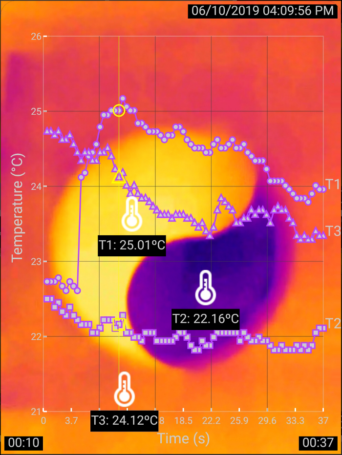
Figure 1: Warming and cooling
Click HERE for a recorded experiment
In the above thermal image, bright orange represents higher temperature while dark blue represents lower temperature, as indicated by the readings of the thermometers T1 and T2 positioned above the colored shapes. The curves in the graph overlaid on top of the thermal image show the changes of the thermometer readings over time.
The trick to produce this yin-yang thermal image is based on a nanoscale effect that I accidentally discovered back in 2010 using an infrared camera. The discovery was published as part of a paper in Journal of Chemical Education by the American Chemical Society. The experiment involves only a piece of paper and a cup of water, but it reveals surprisingly deep science.
Evaporative Cooling as the Yin
Many people know that evaporation happens at the surface of a cup of water (Figure 2). But have you ever wondered how much water actually evaporates from the cup every second? Of course, this depends on a lot of factors such as the temperatures of the water and air, the relative humidity of the air, the air circulation, and the surface area of the water.
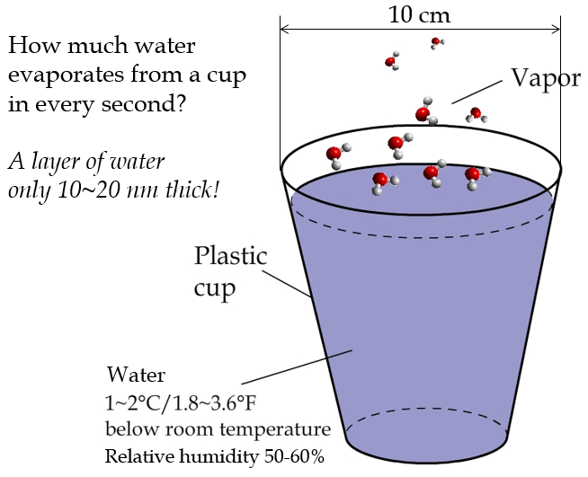
Figure 2: The evaporation of water from a cup is a nanoscale phenomenon.
In a dry, windless room maintained at 20°C, a plastic cup with an opening 10 centimeters wide in diameter can lose 10 gram of water or so in 24 hours. The thickness of the water layer (l) lost through evaporation in a second can be calculated using the following formula:
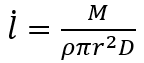
where M is the mass of evaporated water that can be measured using a scale (10 g for instance), ρ is the density of water (approximately 1,000 kg per cubic meter), r is the radius of the cup opening (0.05 m for example), and D is the number of seconds per day (24×60×60=86,400). Plugging these numbers into the formula, we get:
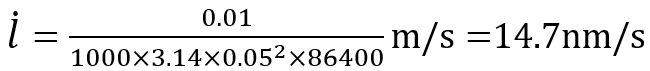
That is to say, only about 15 nanometers of water molecules evaporate from the cup in a second (for those who don’t know how small a nanometer is, the diameter of a human hair is about 80,000–100,000 nanometers). Note that the length of a water molecule is about 0.28 nm. The thickness of 15 nm is equivalent to only 50 water molecules lining up back to back! So this is no doubt a phenomenon of nanoscale origin. What is amazing is that the evaporation of this nanolayer of water per second suffices to cool down all the water in the cup — which is 10,000,000 times thicker — by 1–2°C! This temperature difference persists until all the water evaporates and can be clearly seen through a thermal camera.
The explanation of evaporative cooling is that water molecules in the liquid move at different speeds. The probability of a molecule moving at a speed v follows the Maxwell-Boltzmann distribution:
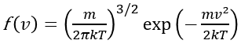
where m is the mass of a water molecule, k is the Boltzmann constant, and T is the temperature. There are always a very small fraction of molecules that are energetic enough to overcome the stickiness of the surface, break apart from the bulk of water, and vanish into the air. As a result, the molecules left behind in the cup have less kinetic energy. Therefore, they appear to be cooler. If we close the cup and stop the molecules from escaping, the cup will then settle at the same temperature as the environment.
A critical factor that affects evaporative cooling is the relative humidity in the air. To understand the effect, we must take the water molecules existing in the air into account. As they randomly move in all directions, some of them bump into the cup and become part of the liquid. The net amount of evaporation thus becomes less because of this cancellation effect. Under the condition of 100% relative humidity, the number of molecules leaving the cup is equal to the number of molecules joining the cup, resulting in no net evaporation and thereby no cooling effect. This theory of dynamic equilibrium can also explain why the cooling stops when we seal the cup. As the cup is perfectly sealed, the concentration of water molecules in its upper part filled with air will gradually increase until a dynamic equilibrium between evaporation and condensation of water molecules at the surface of the liquid is established.
As you can see, it takes quite some efforts just to explain evaporative cooling of a cup of water. What seems trivial is in fact non-trivial at all.
Condensative Warming as the Yang
The opposite of evaporation is condensation. If we put a piece of paper on top of the cup of water (Figure 3), we can capture the outgoing water molecules and condense them on the underside of the paper.
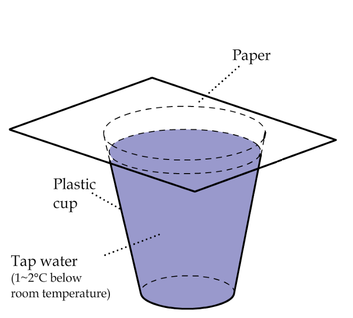
Figure 3: Capture the water vapor with a sheet of paper.
Contrary to evaporation that absorbs heat and cools the surrounds, condensation releases heat and warms up the surrounds. The following images show the thermal imaging of both evaporative cooling and condensative warming with a cup of water and a sheet of paper.
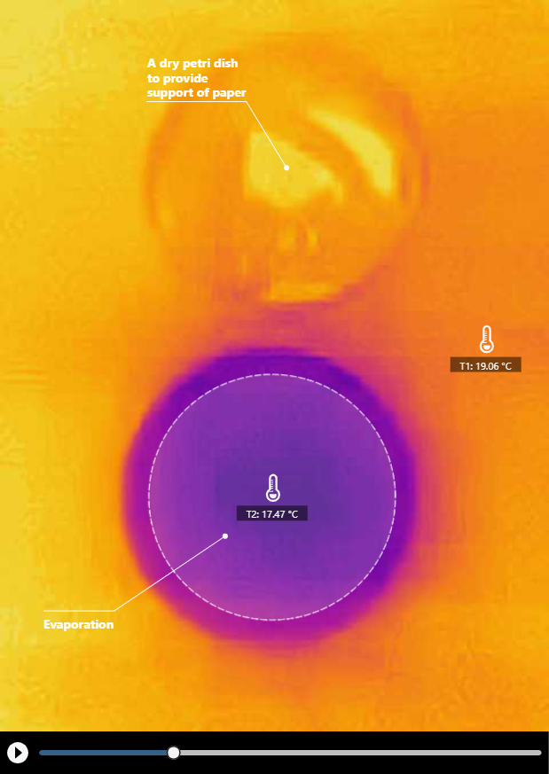
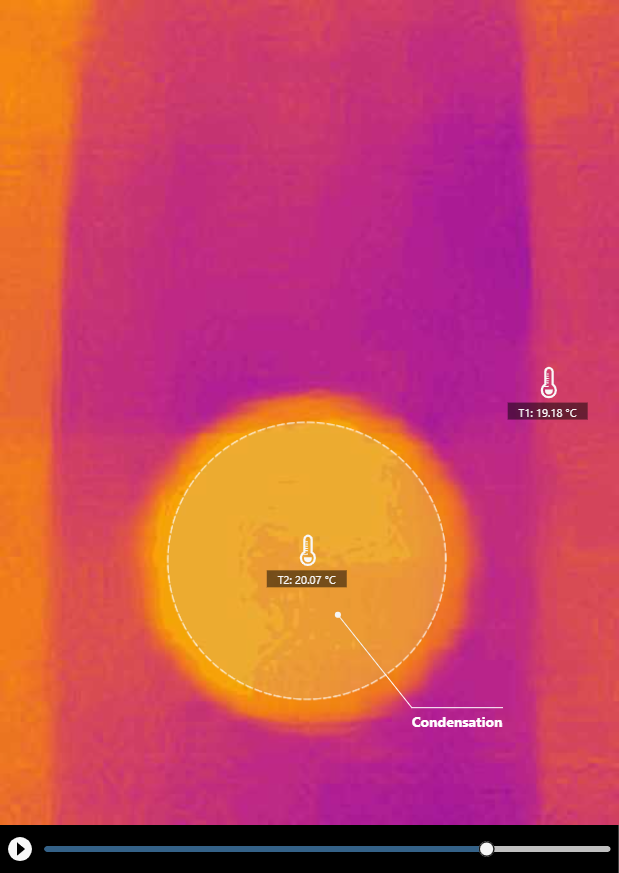
Click HERE for a recorded experiment
An interesting thermal pattern appeared when we shifted the paper a bit. This pattern indicates evaporative cooling and condensative warming at the same time on the sheet.
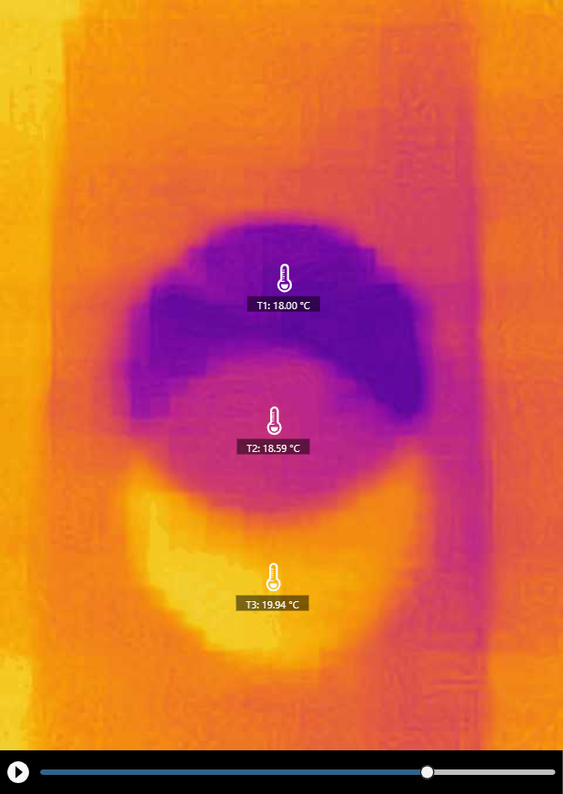
Click HERE for a recorded experiment
The explanation of the warming of the paper is that the water molecules in the air first encounter the cellulose molecules of the paper and form hydrogen bonds with them (a reaction known as hydration), as shown in Figure 4.
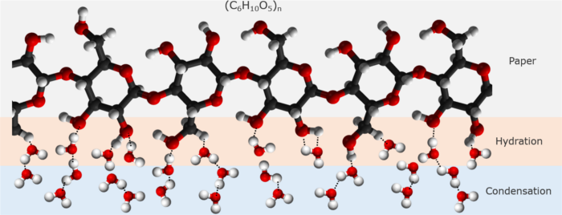
Figure 4: Water molecules form hydrogen bonds with cellulose molecules and among themselves.
When more and more water molecules arrive and the cellulose molecules no longer have acceptors for making hydrogen bonds with them, the newcomers then form hydrogen bonds with the existing water molecules that have bonded with the cellulose molecules, starting the process of condensation.
Both cellulose hydration and water condensation involve the making of hydrogen bonds, which releases heat to warm up the paper. The thermal energy conducts through the paper (~100,000 nm thick) and shows up on the other side, which can be observed under a thermal camera. Figure 5 provides a schematic illustration of the entire process.
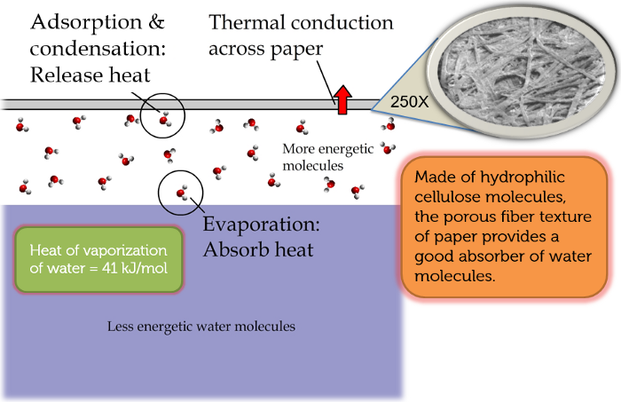
Figure 5: Molecular mechanisms responsible for the warming of paper.
To examine the contributions of hydration and condensation to the warming effect, let’s first calculate the energy needed to warm up the paper by 1°C using the following formula:
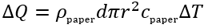
Assuming that the area density of A4 paper (ρ×d, d is the thickness of paper) is 80 g/m² and the specific heat of paper c is about 1.336 J/(g×°C), the required energy is 0.84 J.
Next, let’s calculate the latent heat released by the condensation of water. The latent heat of vaporization of water is about 2,400 J/g. Therefore, the power of condensative warming is 2,400×10 / (24×60×60)=0.28 W. According to Figure 1, the temperature of the paper above water rose by about 2°C in approximately five seconds. The latent heat of condensation could provide ~1.5 J of energy, contributing a main part to the warming effect (~1.7 J). We can only speculate that the energy released via hydration contributes a relatively small portion of the effect. An accurate analysis must also consider the energy dissipation through heat transfer from the paper to the environment.
Energy Transfer from Yin to Yang
Let’s pause here for a minute to think about the essence of this phenomenon. The effect looks as if heat could transfer from a cup of water to a piece of paper that is warmer than the water. As we know, the Second Law of Thermodynamics forbids spontaneous heat flow against a temperature gradient. With the help of evaporation, condensation, and thermal motion of water molecules, however, thermal energy can in fact be transferred from a cooler object to a warmer one by using water molecules driven by the entropic forces as the energy carriers! Figure 6 illustrates my point.
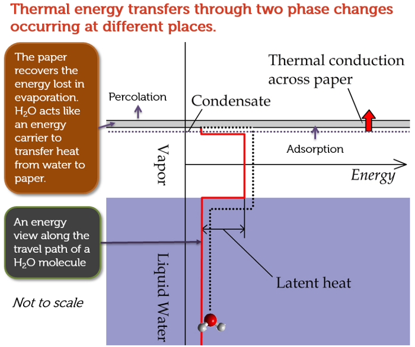
Figure 6: Heat transfer against temperature gradient can happen with the help of entropic forces.
The Creation of the Yin-Yang Thermal Pattern
Now that you have learned about all the chemistry concepts needed to explain the warming and cooling pattern in the yin-yang image you saw at the beginning of this article, I have to confess that the actual shape of the pattern is not scientifically important. All I needed to do to produce the image was to cut out half of the yin-yang image that I printed, place on a cup of water, and then take a thermal image of what happened, as shown below.
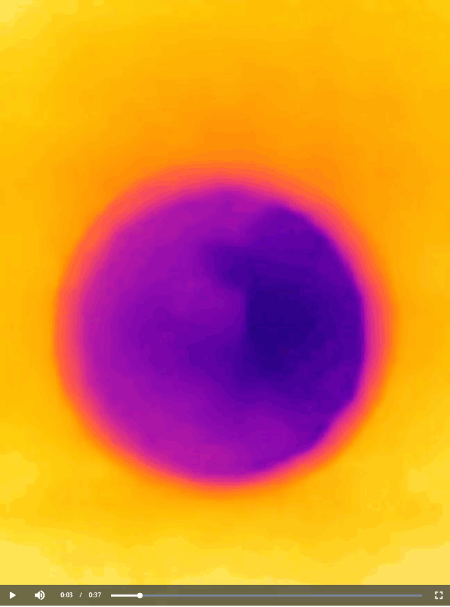
You can cut the paper sheet into any shape you like to produce a similar bi-color image. For instance, back in 2012, I generated a thermal image that resembles an old logo of Pepsi (Figure 7). The image is interesting because the temperature of a drink in a cup is quite relevant to the business of Pepsi. Perhaps the folks at Pepsi don’t even know that their logo actually carries an awesome scientific meaning.
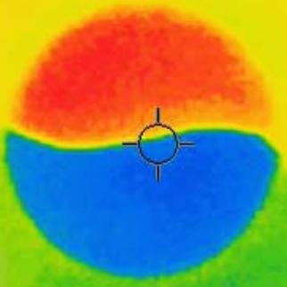
Figure 7: A scientific meaning of Pepsi’s logo?
Conclusion
Evaporation and condensation are opposite phase changes. Cooling and heating are opposite physical processes. Yet, just like the flow of qi between the opposite pair of yin and yang, these natural phenomena are interconnected through the ubiquitous entropic forces of random thermal motions that drive the circulation of matter and energy (for a reference about the importance of evaporation and condensation to the world we live in, check out this article about the chemistry of weather). This scientific insight agrees marvelously with the wisdom of ancient Chinese. There are presumably not many science experiments out there that are so simple to do and yet so rich in meaning.